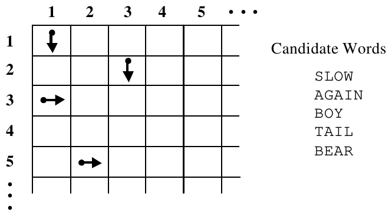
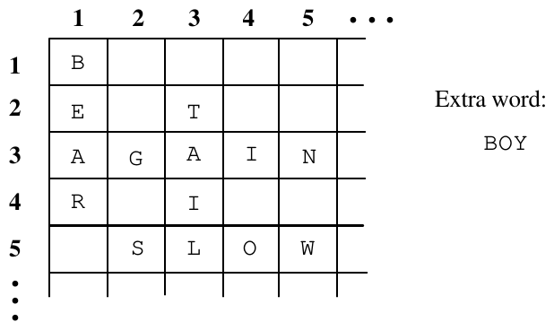

25th Annual ACM ICPC World Finals · Problem C
Your brilliant but absent-minded uncle believes he has solved a difficult crossword puzzle but has misplaced the solution. He needs your help to reconstruct the solution from a list that contains all the words in the solution, plus one extra word that is not part of the solution. Your program must solve the puzzle and print the extra word.
The crossword puzzle is represented by a grid with ten squares on each side. Figure 1 shows the top left corner of a puzzle. The puzzle has a certain number of “slots” where a word can be placed. Each slot is represented by the row and column number of the square where the slot begins, and the direction in which the slot extends from its initial square (“across” or “down”). The length of each slot is not specified. The puzzle has a list of candidate words, all but one of which is used in solving the puzzle.

Figure 2 shows a solution to the example puzzle in Figure 1. In a valid solution, each slot is filled with a candidate word. Every maximal horizontal or vertical sequence of two or more letters must be a word in the input. Any candidate word can be used in any slot as long as the word fits in the puzzle and does not conflict with any other word. In the example, all the candidate words are used except the word “BOY”.

The input data consist of one or more test cases each describing a puzzle trial. The first input line in each test case contains a positive integer N that represents the number of slots in the puzzle. This line is followed by N lines, each containing the row number and column number of a square where a slot begins, followed by the letter ‘A’ (if the slot is “Across”) or ‘D’ (if the slot is “Down”). The next N + 1 input lines contain candidate words that can be used in the puzzle solution.
The final test case is followed by a line containing the number zero.
For each trial, print the trial number followed by the word that is not used in the puzzle solution, using the format in the example output. Observe the following rules:
4 1 1 D 2 3 D 3 1 A 5 2 A SLOW AGAIN BOY TAIL BEAR 0
Trial 1: BOY